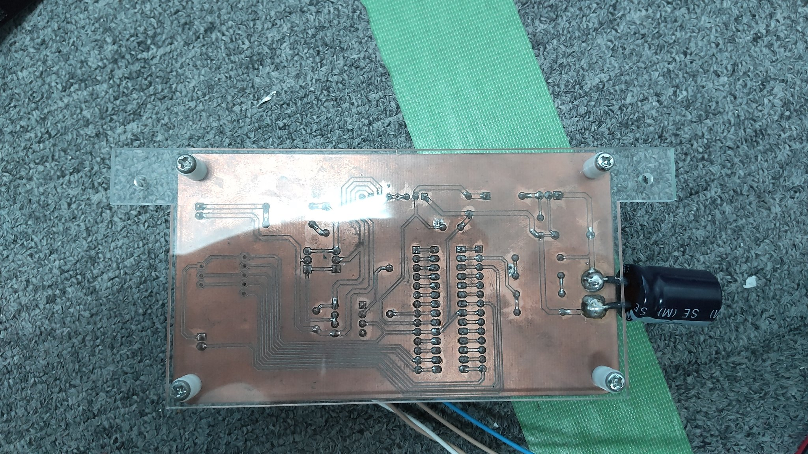

名称
MIRS2405 エレクトロニクス基板製造完了報告書
番号
MIRS2405-ELEC-0002
版数
最終更新日
作成
承認
改訂記事
A01
2024.11.8
宇佐見祥
初版
目次
1. はじめに
2. サーボモータ電源基板
3. PWM・ゲートドライブ基板
4.電圧測定基板
5.参考文献
1.はじめに
本ドキュメントはMIRS2405 𝔊𝔘𝔏𝔏ℭの基板製造完了報告書である。
製造した基板の動作検証については、動作試験書に記載する。
2.サーボモータ電源基板
製作した基板をfig.1, fig.2に示す。
fig.1 サーボモータ電源回路 表面
fig.2 サーボモータ電源回路 裏面
バッテリー入力および電源出力はXT60コネクタを使用した。
3.PWM・ゲートドライブ基板
製作した基板をfig.3, fig.4に示す。
fig.3 PWM・ゲートドライブ基板 表面

fig.4 PWM・ゲートドライブ基板 裏面
基板上面右側の5穴,3穴は、ほかのデバイスとSPIまたはI2Cにて通信するための準備として加工した部分である。
現在は電源基板と他のマイコン間での通信はしない設計のため、XHコネクタは未実装としている。
4.電圧測定基板
製作した基板をfig.5, fig.6に示す。
fig.3 電圧測定基板 表面
fig.4 電圧測定基板 裏面
5.参考文献
njm2360アプリケーションノート
MIRS2405ドキュメント管理台帳へ